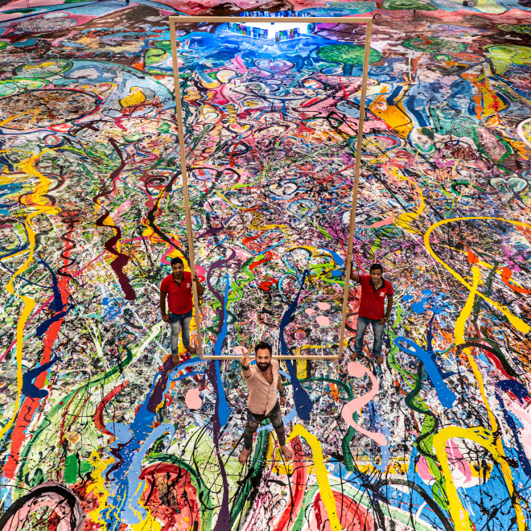
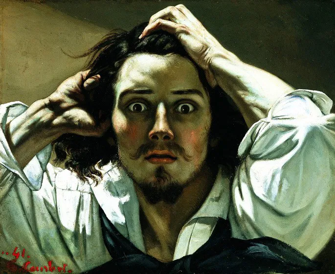
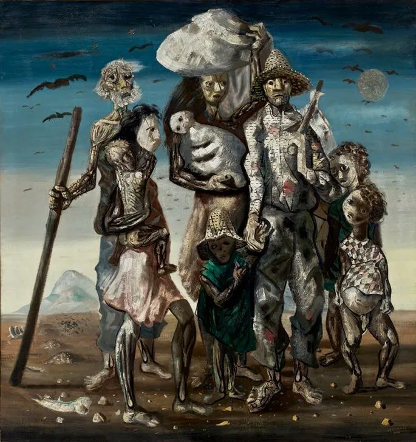

Pinturas?
O que se entende por 'pinturas'? Bom no geral isso se refere a aplicação de pigmentos sobre uma superfície para criar cor e textura.
Já no contexto artístico, a pintura é um modo de expressar-se com cores, formas, linhas!
Pintura a óleo:
The Journey of Humanity - Sacha Jafri - 1993
Pintura Realista:
Autorretrato de Gustave Courbet - 1843
Pintura Expressionista
Retirantes - Portinari - 1944
A pintura a óleo: Possui secagem lenta e com isso permite que o artista trabalhe as cores e os detalhes por um longo tempo, fazendi ajustes e efeitos de fusão.
Essa pintura exige que seja protegida por uma moldura que permita a circulação de ar.
A pintura realista: Diferentemente dos demais movimentos artísticos que buscavam idealizar a realidade, o realismo vem para retratar a vida cotidiana de maneira firme, fiel e objetiva.
Como exemplo, a retratação da vida da classe trabalhadora, de pessoas comuns, sem embelezamento ou idealização.
A pintura Expressionista: surge como uma reação ao impressionismo e ao naturalismo, buscando uma representação mais subjetiva e emocional da realidade.
Trazendo bastante temas mais sombrios e angustiantes.
A pintura impressionista: o nome do movimento surgiu de maneira pejorativa, a partir de uma crítica ao quadro de Claude MOnet 'Impressão, nascer do sol', isso por ser interpretada por um crítico como se fosse uma zombaria!
Entretanto os artistas do grupo adotaram o termo para identificar o grupo, ficando orgulhosos de sua nova abordagem, sem se deixar abalar pelas críticas alheias.
O artista se inspirou a pintar o quadro depois de caminhas com alguns amigos em uma tarde quente em Oslo.
ONde ele obsorvou as cores quentes no céu e, no mesmo momento, teve uma sensação de cansaço, de estar doente.
Nessa hora Much diz ter percebido "O grito da natureza", sendo esse na verdade, o título original para a obra.
A arte realista foi um movimento que surgiu na França, sendo uma reação direta ao idealismo do Romantismo.
O realismo buscava de maneira fiel, trazer a realidade para retratar o mundo, sem heróis ou cenas fantásticas.
O lema era a objetividade mostrar a vida como ela realmente é.
Um dos principais artistas desse movimento foi Gustave Courbet, pintor Francês.
Passo 1: Desenhe um círculo.
Passo 2: Desenhe as diretrizes
Passo 3: Desenhe os olhos na linha central
Passo 4: Desenhe um nariz proporcional
Passo 5: Adicione as sobrancelhas
Passo 6: Use uma forma de triângulo para os lábios
Passo 7: Adicione orelhas
Passo 8: Desenhe o cabelo

• O segredo não é a linha, é a ausência dela.
Em desenhos realistas, a técnica mais importante é abandonar as linhas de contorno.
• Pintura em CINZA?!
Sim, muitos pintores adotam a técnica de pintar e fazer todos os detalhes em tons de cinza, para depois pintar por cima com camadas finas de cor. Essa técnica se chama Grisalha.
• A cor que não existe.
Muitos pintores realistas ignoram a cor que ele sabe que o objeto tem, e pinta a cor que ele de fato vê. Famoso fato: Cor Local vs. Cor Percebida.
• Desenhando o que NÃO EXISTE.
Como desenhar algo branco e fino, como um fio de cabelo loiro ou o bigode de um gato sobre uma área escura? Artistas "desenham" o brilho antes de sombrear.
• De cabeça pra baixo pra enganar o cérebro.
Uma das dicas mais absortas, é virar tanto a foto quanto o desenho de cabeça pra baixo, nosso cérebro ao olhar uma imagem começa a distinguir querendo ajudar - "Isso é um olho, isso é um nariz" - e isso na verdade atrapalha, já que você não está mais olhando formas e ângulos que compõe o "nariz"